Zybo-Z7 / Vivado — Bugs & Quirks
A running list of strange Vivado/Vitis behavior found while working on the Zybo Z7 HDMI driver project, and how to get past each one. Referenced from zybo.html.
Duplicate Top-Level Wrapper
Sometimes clicking "Create HDL Wrapper" creates a duplicate top-level module. Leaving the duplicate around can cause does not exist errors like the ones below.
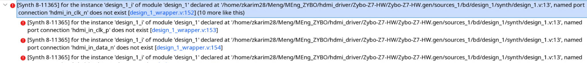
Double-click on both wrapper modules to compare their date/time of synthesis — this tells you which one is stale.
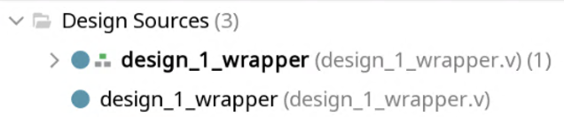
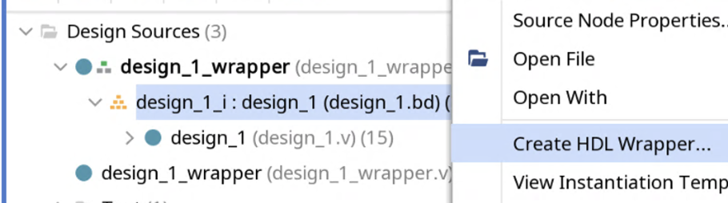
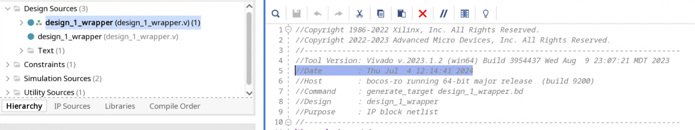
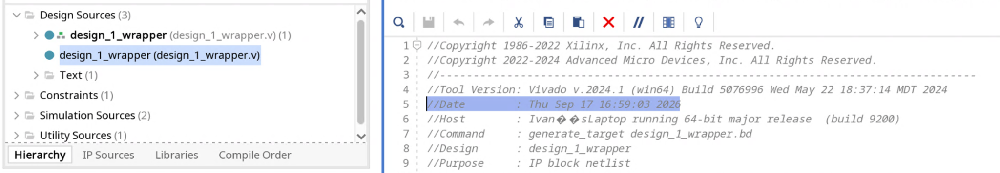
Right-click the older/stale wrapper file and choose "Remove File from Project…" to delete the earlier synthesized file.
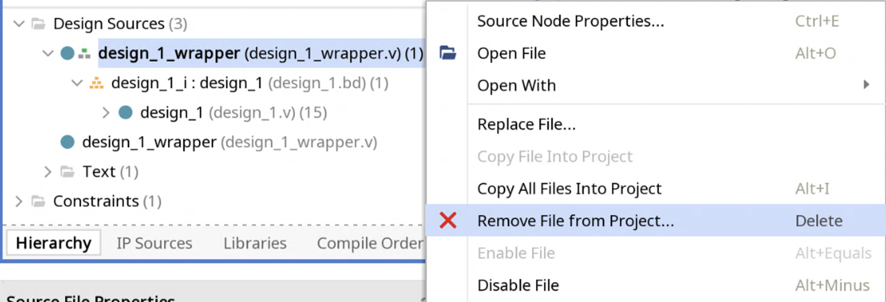
Check the box "Also delete the project local file/directory from disk."
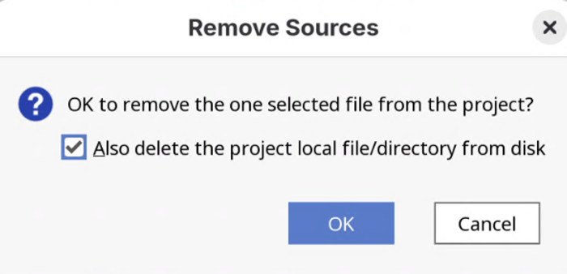
If the change doesn't take effect automatically, right-click anywhere in the Sources area and select "Refresh Hierarchy."
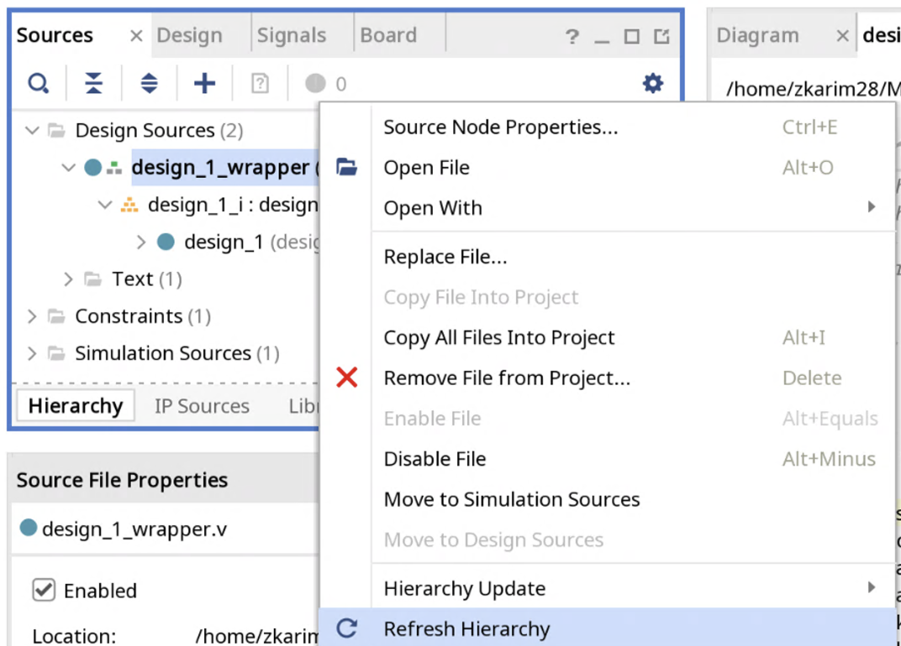
The file structure automatically "refreshes" — the block diagram's .bd now points to the correct wrapper Verilog file.
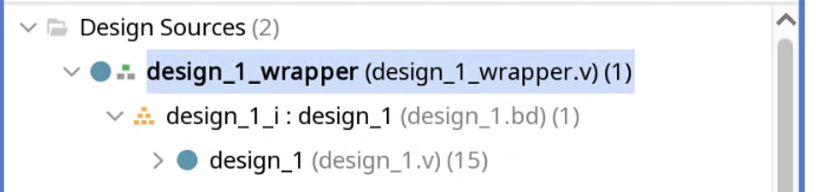
Ensuring IPs Are Up to Date / Pointing to the Correct Location
Navigate to Tools → Settings…
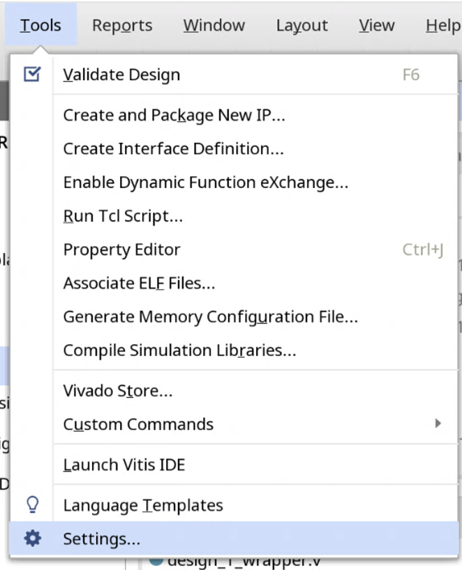
Navigate to IP → Repository. Click "Refresh All" to re-scan the listed IP repositories, or click the plus icon to add a new path pointing to new IPs.
lorenz_dda_driver_1_0 entry below) means Vivado can't currently resolve it — check the path still exists on disk.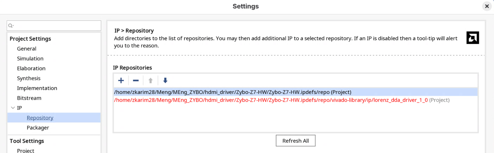
IP Not Showing Up in Vivado
If an IP somehow isn't showing up in Vivado despite the repository path being correct, make sure none of the source .v files in that IP's folder accidentally got saved/renamed with a trailing .txt extension (e.g. axi_leronz_dda.v.txt instead of axi_leronz_dda.v).
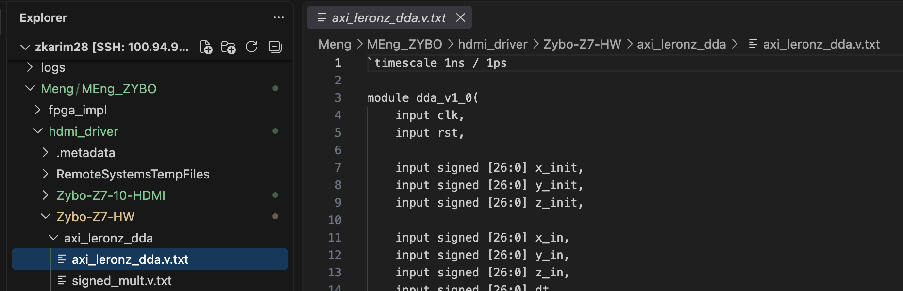